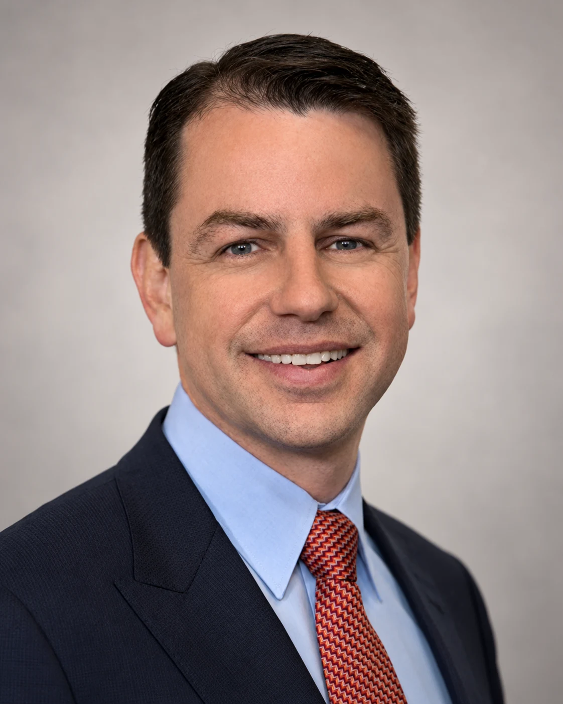

We founded Sightlines on a simple proposition: better decisions come from asking better questions and bringing the right evidence and perspectives together. Climate is our starting point; our work helps companies understand climate risk and opportunity, meet emerging disclosure requirements and make better business decisions.
Susan McHattie
Enterprise value, climate risk and opportunity, strategy
Susan works with organisations to understand how changing conditions affect the way they create, protect and grow enterprise value, and what that means for strategy, investment and action.
She specialises in connecting climate and other external change to the business itself: its value drivers, assets, customers, capabilities and dependencies. She is the architect of the Climate Value Framework, which underpins Sightlines’ approach.
At Sightlines, Susan leads enterprise value analysis, climate risk and opportunity, strategy and the continuing development of the methodology.
Credentials: Executive Masters Public Administration, University of Sydney; Bachelor of Arts (Communication), UTS; Graduate, Australian Institute of Company Directors; GARP Certificate in Climate and Sustainability Risk.
LinkedIn profile ↗

Sean Rugers
Finance, reporting and commercial consequence
Sean brings deep financial reporting expertise and a practical understanding of how complex business decisions flow through financial performance, balance sheets and capital.
Across almost 30 years with PwC Australia, Sean advised finance teams on complex transactions, accounting standards, financial policy and major infrastructure projects. He brings technical rigour and pragmatic advice that finance teams can apply.
At Sightlines, Sean brings the CFO and financial reporting perspective, strengthening the connection between enterprise insight, financial reporting and robust disclosure.
Credentials: Bachelor of Economics (Accounting and Finance), Macquarie University; Chartered Accountant.
LinkedIn profile ↗
David Habben
Technology, AI and commercial application
David brings more than 20 years of enterprise technology and commercial experience to the practical application of AI in business.
His career spans enterprise technology, digital media, cloud, AI and strategic partnerships across Australia and Asia. During 14 years with Akamai Technologies, David held senior regional and business-development roles, building markets, growing enterprise relationships and developing partnerships across cloud and technology ecosystems.
David is the founder of Turnkey Agent, where he designs and implements AI agent systems for real business workflows, with particular attention to orchestration, tools, permissions, evaluation, guardrails and human decision points.
At Sightlines, David leads the application of AI to the advisory method, translating rigorous methodology into efficient, repeatable analytical workflows while keeping evidence, controls and human judgement visible.
Credentials: Bachelor of Engineering (Telecommunications), Federation University Australia; Master of Commerce (Marketing), UNSW; further study in machine learning, deep learning and applied AI.
LinkedIn profile ↗